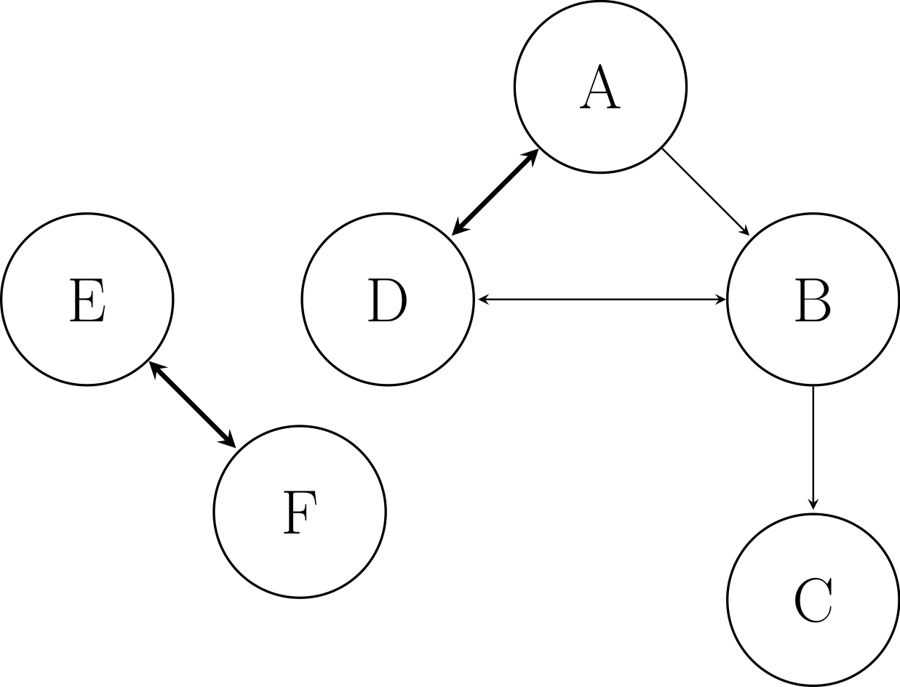

Theory¶
Chemical kinetics¶
Cantera provides a great basic description of chemical kinetic theory.
Directed Relation Graph (DRG) method¶
Lu and Law [1, 2, 3], building on the earlier visualization work of Bendtsen et al. [4], first developed the DRG method as a way to use graphs to represent kinetic models, where species are nodes and directed edges in the graph represent dependence.
For example, consider the example system with six species A, B, C, D, E, and F:

Example graph respresenting model with six species.¶
In this case, A is the user-defined target species (such as fuel or oxidizer). The directed edge from A to B indicates that A requires the presence of B in the model to accurately calculate its production and/or consumption, because they participate in reactions together. A also depends on D, and vice versa, with the thicker line indicating a stronger dependence. B depends on C and D. E and F depend on one another, but are not connected to the target A, even indirectly.
In DRG, the weight of the directed edges, which represents the dependence of one species on another, is given by the direct interaction coefficient. The direct interaction coefficient for species A and B is
where \(s\) indicates the reaction index, \(N_{\text{reaction}}\) is the number of reactions, \(\nu_{A,i}\) is the overall stoichiometric coefficient for species A in reaction \(i\), and \(\omega_i\) is the overall reaction rate of the \(i\)th reaction.
After calculating all the direct interaction coefficients, a user-defined cutoff threshold \(\epsilon\) (e.g., 0.1) is applied to the system, and edges where \(r_{AB} < \epsilon\) are removed. Then, a depth-first search is performed starting at the target species. Only species reachable via the search are retained; any reaction with an eliminated species is removed.
DRG with Error Propagation (DRGEP) method¶
Pepiot and Pitsch [5] first presented the DRGEP method as an improved version of DRG that better represents the indirect dependence of species down graph pathways. Niemeyer and Sung [6] further developed the DRGEP method, demonstrating the importance of graph-search algorithm choice for the method and in particular using Dijkstra’s algorithm [7, 8].
DRGEP also defines direct interaction coefficients, although they are slightly different than the DRG coefficients:
where
After calculating the direct interaction coefficients for all species pairs, a modified Dijkstra’s algorithm is applied from target species to calculate the overall interaction coefficients between the target T and all other species B:
where \(r_{TB, p}\) is the path-dependent interaction coefficient between target species \(T\) and species \(B\) along path \(p\):
and \(n\) is the number of species between \(T\) and \(B\) in path \(p\).
To eliminate species, a cutoff threshold \(\epsilon\) (e.g., 0.01) is applied to the overall interaction coefficients; a species B is removed when \(R_{TB} < \epsilon\).
Path Flux Analysis (PFA) method¶
Sun et al. [9] developed the PFA method to build on the DRG and DRGEP methods by combining both direct and indirect species fluxes. The PFA direct interaction coefficient sums production and consumption interactions between two species both at the first-generation level (reactions where the species interact directly) and second-generation level (where species interact indirectly through one other species):
where the interaction coefficients for the production and consumption of species \(A\) via species \(B\) of the first generation are
and the production and consumption fluxes of species \(A\) interacting with species \(B\) are
The interaction coefficients for flux ratios between the two species of the second generation are then
Once all the interaction coefficient pairs are calculated, a threshold \(\epsilon\) is set (e.g., 0.1), and any edge where \(r_{AB} < \epsilon\) is removed from the graph, similar to the DRG method.
Sensitivity Analysis¶
Although sensitivity analysis has been around for a while as a model reduction technique [10, 11], it becomes very computationally expensive when applied to the larger kinetic models regularly dealt with today (e.g., 100-1000s of species).
Instead, we can use the above graph-based methods to first remove a significant fraction of species, and then analyze a portion of the remaining species using the interaction coefficient values to sort and identify which to consider. In particular, the DRG-aided sensitivity analysis (DRGASA) approach [12, 13] and DRGEP-based sensitivity analysis (DRGEPSA) [14, 15] have shown great efficacy for reduction.
In the DRGASA approach, an upper threshold value \(\epsilon^*\) (e.g., 0.4) is applied to the system, and any species that would be removed (but were remaining following the DRG reduction) are considered “limbo” species. All of the limbo species are then considered for removal one-by-one. DRGEPSA works similarly, although the upper threshold \(\epsilon^*\) is applied to the overall interaction coefficients to identify the set of limbo species.
pyMARS implements two sensitivity analysis algorithms: initial
and greedy [15]. In the initial algorithm,
the errors induced by the removal of the limbo species are evaluated
only once, initially, and then the species are considered for removal
in ascending order. In contrast, the greedy algorithm reevaluates
the induced error of remaining limbo species after each removal,
and chooses the species with the lowest induced error at that point.
pyMARS also supports applying sensitivity analysis alone, although due to the high computational cost this approach is not recommended.
References¶
Tianfeng Lu and Chung K. Law. A directed relation graph method for mechanism reduction. Proceedings of the Combustion Institute, 30(1):1333–1341, 2005. doi:10.1016/j.proci.2004.08.145.
Tianfeng Lu and Chung K. Law. Linear time reduction of large kinetic mechanisms with directed relation graph: n-heptane and iso-octane. Combustion and Flame, 144(1-2):24–36, 2006. doi:10.1016/j.combustflame.2005.02.015.
Tianfeng Lu and Chung K. Law. On the applicability of directed relation graphs to the reduction of reaction mechanisms. Combustion and Flame, 146(3):472–483, 2006. doi:10.1016/j.combustflame.2006.04.017.
Anders Broe Bendtsen, Peter Glarborg, and Kim Dam-Johansen. Visualization methods in analysis of detailed chemical kinetics modelling. Computers & Chemistry, 25(2):161–170, March 2001. doi:10.1016/s0097-8485(00)00077-2.
Perrine Pepiot-Desjardins and Heinz Pitsch. An efficient error-propagation-based reduction method for large chemical kinetic mechanisms. Combustion and Flame, 154(1-2):67–81, 2008. doi:10.1016/j.combustflame.2007.10.020.
Kyle E. Niemeyer and Chih-Jen Sung. On the importance of graph search algorithms for DRGEP-based mechanism reduction methods. Combustion and Flame, 158(8):1439–1443, 2011. doi:10.1016/j.combustflame.2010.12.010.
E. W. Dijkstra. A note on two problems in connexion with graphs. Numerische Mathematik, 1(1):269–271, December 1959. doi:10.1007/bf01386390.
T. H. Cormen, C. E. Leiserson, R. L. Rivest, and C. Stein. Introduction to Algorithms. MIT Press, Cambridge, MA, 2 edition, 2001.
Wenting Sun, Zheng Chen, Xiaolong Gou, and Yiguang Ju. A path flux analysis method for the reduction of detailed chemical kinetic mechanisms. Combustion and Flame, 157(7):1298–1307, 2010. doi:10.1016/j.combustflame.2010.03.006.
H Rabitz, M Kramer, and D Dacol. Sensitivity analysis in chemical kinetics. Annual Review of Physical Chemistry, 34(1):419–461, October 1983. doi:10.1146/annurev.pc.34.100183.002223.
Tamás Turányi. Sensitivity analysis of complex kinetic systems. tools and applications. Journal of Mathematical Chemistry, 5(3):203–248, September 1990. doi:10.1007/bf01166355.
Ramanan Sankaran, Evatt R. Hawkes, Jacqueline H. Chen, Tianfeng Lu, and Chung K. Law. Structure of a spatially developing turbulent lean methane–air Bunsen flame. Proceedings of the Combustion Institute, 31(1):1291–1298, 2007. doi:10.1016/j.proci.2006.08.025.
X. L. Zheng, T. F. Lu, and C. K. Law. Experimental counterflow ignition temperatures and reaction mechanisms of 1,3-butadiene. Proceedings of the Combustion Institute, 31(1):367–375, 2007. doi:10.1016/j.proci.2006.07.182.
Kyle E. Niemeyer, Chih-Jen Sung, and Mandhapati P. Raju. Skeletal mechanism generation for surrogate fuels using directed relation graph with error propagation and sensitivity analysis. Combustion and Flame, 157(9):1760–1770, 2010. doi:10.1016/j.combustflame.2009.12.022.
Kyle E. Niemeyer and Chih-Jen Sung. Reduced chemistry for a gasoline surrogate valid at engine-relevant conditions. Energy & Fuels, 29(2):1172–1185, 2015. doi:10.1021/ef5022126.

{kind=link}